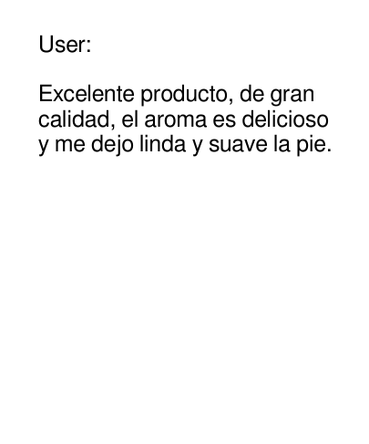
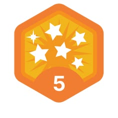

La Historia de EcoMarket: De una Idea Local a un Cambio Global
EcoMarket no nació en una oficina corporativa, sino en la cocina de un grupo de amigos preocupados por el rumbo del planeta. Corría el año 2025 cuando los fundadores se propusieron un desafío: vivir un mes completo generando "cero residuos" y consumiendo únicamente productos sostenibles.
Frustrados por estas barreras, pero inspirados por el cambio que querían ver, decidieron crear la solución. Así nació EcoMarket: una plataforma web centralizada diseñada para democratizar el acceso a un estilo de vida consciente. Lo que empezó como un catálogo digital de diez productores locales independientes, hoy es una comunidad vibrante que conecta a consumidores responsables con alternativas reales, empaques 100% compostables y una huella de carbono neutralizada en cada envío.
Misión
Nuestra misión es facilitar la transición hacia un estilo de vida sostenible, ofreciendo productos cotidianos de alta calidad, respetuosos con el medio ambiente y accesibles para todos. Nos dedicamos a simplificar el consumo responsable, demostrando que cuidar del planeta puede ser una experiencia fácil, transparente y cotidiana.
Visión
Convertirnos en la plataforma de comercio electrónico sostenible líder en la región transformando la forma en que el mundo compra. Aspiramos a consolidar un ecosistema digital donde el éxito comercial esté intrínsecamente ligado al bienestar social y la regeneración ambiental, inspirando a millones de personas a dejar una huella verde en el planeta.
Nuestros Valores Fundamentales
- Transparencia Radical: No creemos en el greenwashing (falso ecologismo). Evaluamos rigurosamente el origen, los materiales y los procesos de cada producto en nuestro catálogo para que el consumidor sepa exactamente qué está comprando.
- Coherencia Ecológica: Desde la selección de inventario hasta el código que corre nuestra web y los empaques de cartón reciclado y tinta vegetal de nuestros envíos; la sostenibilidad es el eje de cada decisión.
- Accesibilidad y Equidad: El cuidado del planeta no debería ser un lujo. Trabajamos mano a mano con productores y optimizamos la cadena logística para ofrecer precios justos tanto para quienes producen como para quienes consumen.
- Apoyo a la Comunidad Local: Priorizamos a los pequeños emprendedores, artesanos y agricultores locales, impulsando la economía de proximidad y reduciendo el impacto del transporte de larga distancia.
- Innovación Constante: Buscamos siempre las mejores soluciones tecnológicas y materiales del futuro para reducir residuos, optimiza rutas de entrega y mejorar la experiencia de usuario en nuestra web.
Principios ecológicos
- 🚫 Sin Plástico (Plastic-Free):Prioriza alternativas libres de polímeros sintéticos derivados del petróleo. productos se distribuyen a granel o en empaques de vidrio, papel kraft, cartón reciclado o aluminio, reduciendo radicalmente los residuos de un solo uso que saturan los océanos.
- 🍏 Orgánico y 100% Natural:Garantiza que los alimentos, cosméticos y artículos de aseo han sido cultivados o fabricados sin pesticidas artificiales, herbicidas fertilizantes químicos ni organismos genéticamente modificados (OGM). Protege tanto la salud del consumidor como los microorganismos del suelo.
- 🛡️ 100% Biodegradable / Compostable:Los productos (como utensilios, cepillos o bolsas) están elaborados con materiales de origen biológico que se desintegran de forma natural en el medio ambiente a corto plazo, regresando a la tierra como nutrientes sin dejar residuos tóxicos.
- 🤝 Comercio Justo (Fair Trade):Asegura una relación comercial equitativa entre la empresa y los pequeños productores o comunidades rurales. Garantiza salarios dignos, condiciones de trabajo seguras y el respeto por los derechos humanos, promoviendo un desarrollo sostenible
Testimonio


